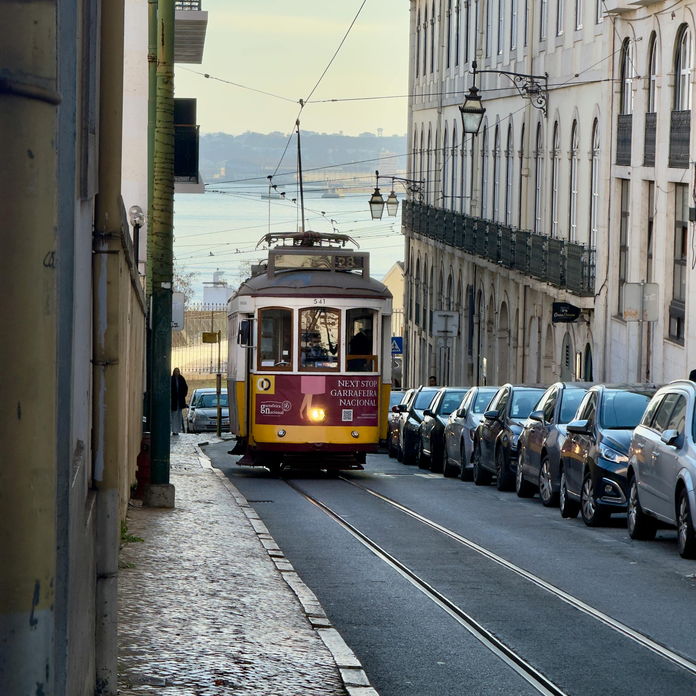
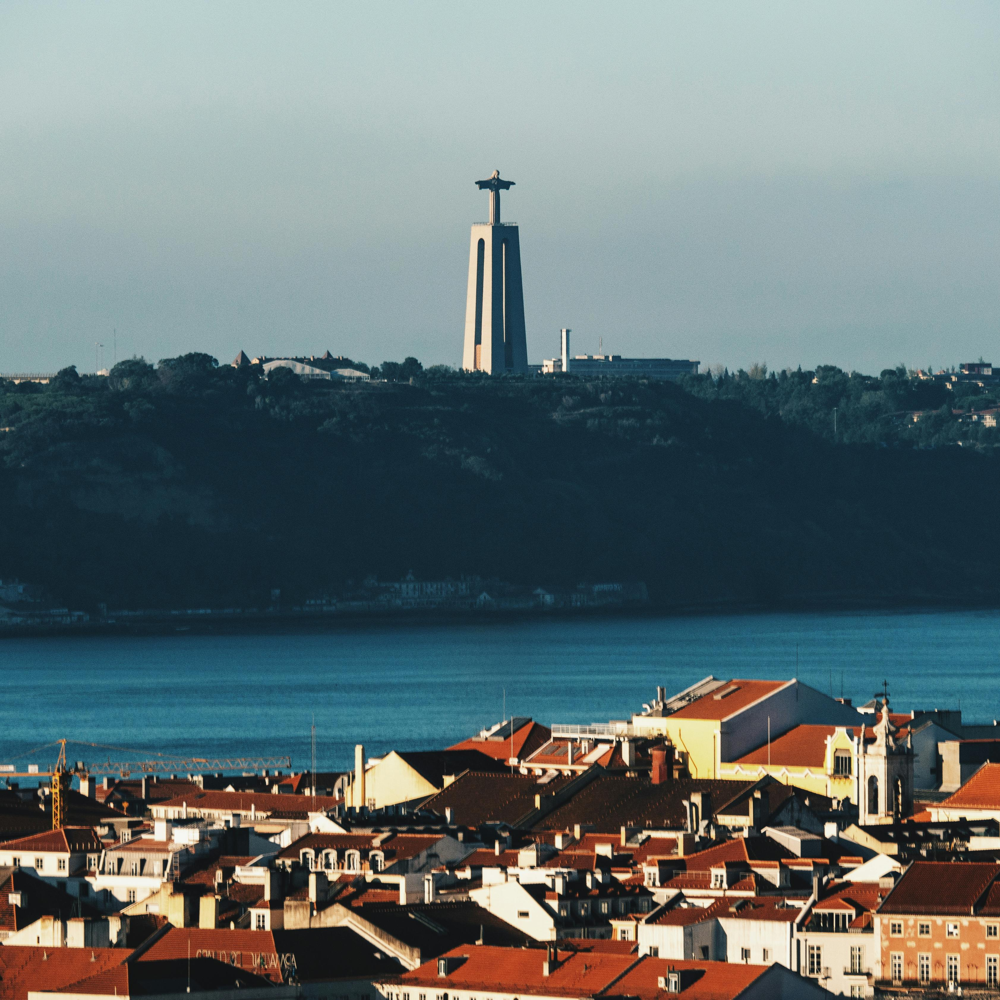
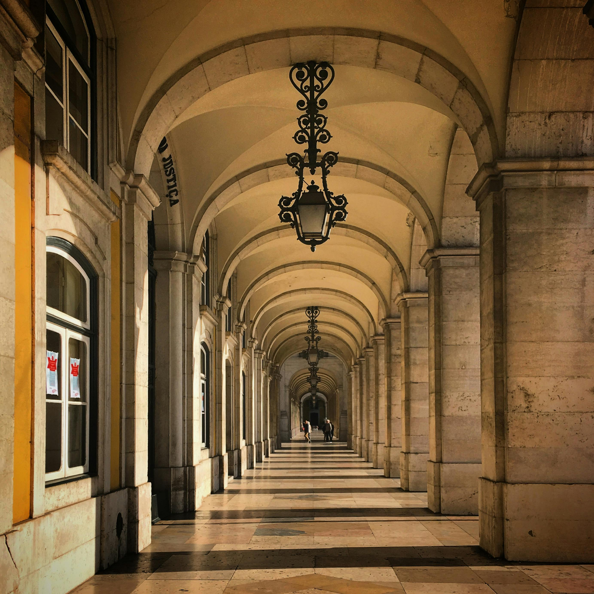

YOU MUST SEE

Carris

Cristo Rei

Torre de Belém

Terreiro do Paço
Lisbon is the sunny, hilly, capital and largest city of Portugal, known for its rich history, Fado music, and delicious seafood.
Carris
Cristo Rei
Torre de Belém
Terreiro do Paço
"By day Lisbon has a naive theatrical quality that enchants and captivates, but by night it is a fairy-tale city, descending over lighted terraces to the sea, like a woman in festive garments going down to meet her dark lover".
Sign up for our product by clicking that button right over there!